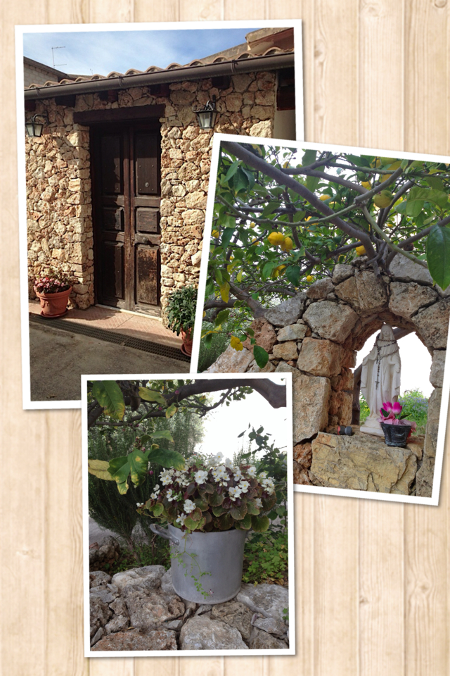
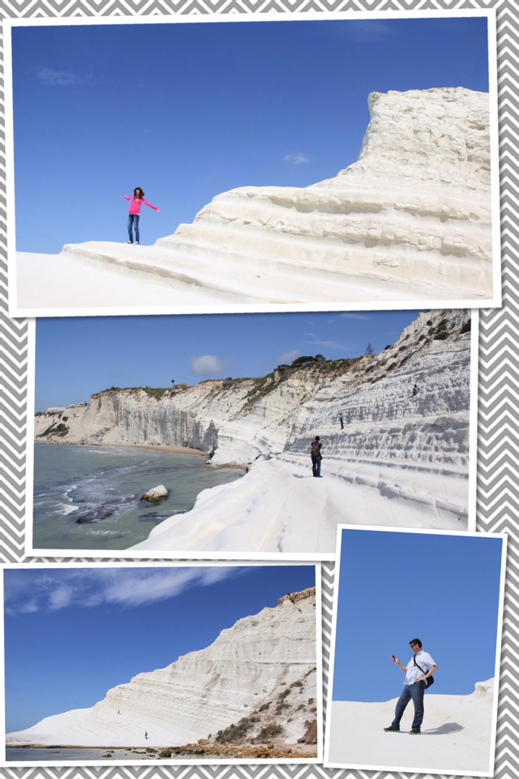
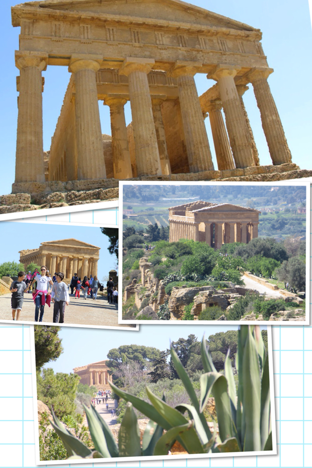
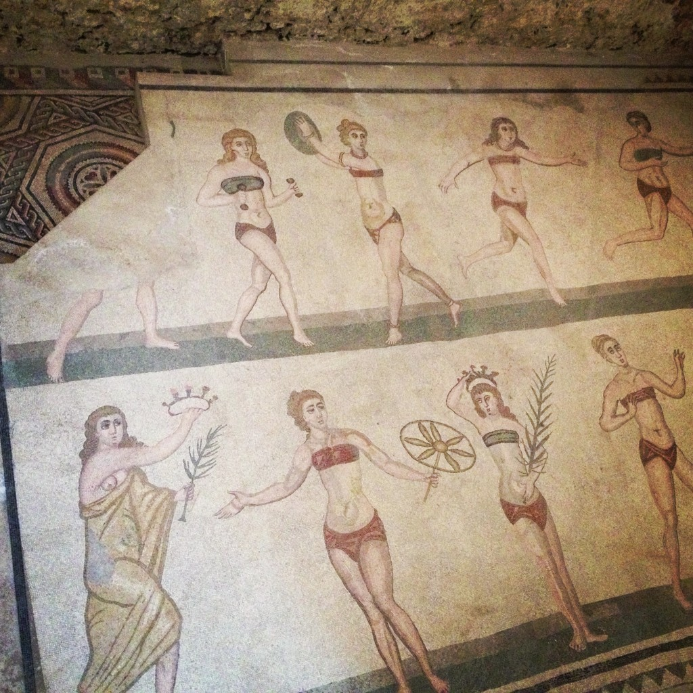

B&B Baglio degli Angeli The third day was the highlight of our trip. After having breakfast "family style" (which is everybody sitting around a big table filled with delicious food, laughing and chatting with the B&B owner) and picking fresh lemons directly from the tree (even the leaves smelled like lemon!), we headed to a place that is still unknown to the most: Scala dei Turchi.
Scala dei Turchi Scala dei Turchi is a white cliff near Realmonte, in the Agrigento area. You need to leave the car in a parking spot nearby and walk for about 20 minutes on the beach in order to reach it, but once you get there you become fascinated by what you see: a huge, white and smooth cliff right by the sea, against the bluest sky (if you are lucky to get there on a sunny day). The kids climbed on the rocks while we admired the view and enjoyed such an incredible place. Unfortunately we couldn't stay long, we had a very busy schedule that day, so we left, bringing with us fantastic memories (and photos).
Valle dei Templi Our next stop was the complete opposite: a very touristic place which was nice, all right, but disappointing after all. The Valle dei Templi features the remains of 7 antique temples, but only one is well preserved: the Tempio della Concordia. What's nice about this site is that, besides the temples, there are many other archeological remains and the view over the valley, with the sea in the distance, is fantastic. But it was so crowded (note: it was the end of March) and hot (note again: end of March!) that I don't even imagine how one can enjoy this place in peak season. Parking was another issue since it wasn't too close to the entrance.
Bikini girls at Villa Romana del Casale Fortunately our third and last stop was a pleasant revelation (at least for an archeology fanatic like me): the Villa del Casale in Piazza Armerina. This place is in the middle of the nowhere, and still to this day historians wonder why our ancestors chose this location to built such a grand villa. Here you can almost breathe the glory of that magnificent time not only by admiring the fine mosaics, but also the structure that reproduces in a modern way the architecture of the building. When our visit came to an end (I was the last of the group to leave the place, and I honestly would have stayed longer...), we headed to the B&B Giucalem where we were welcomed by Giuseppe, who offered us some homemade limoncello and made us feel at home from the start.